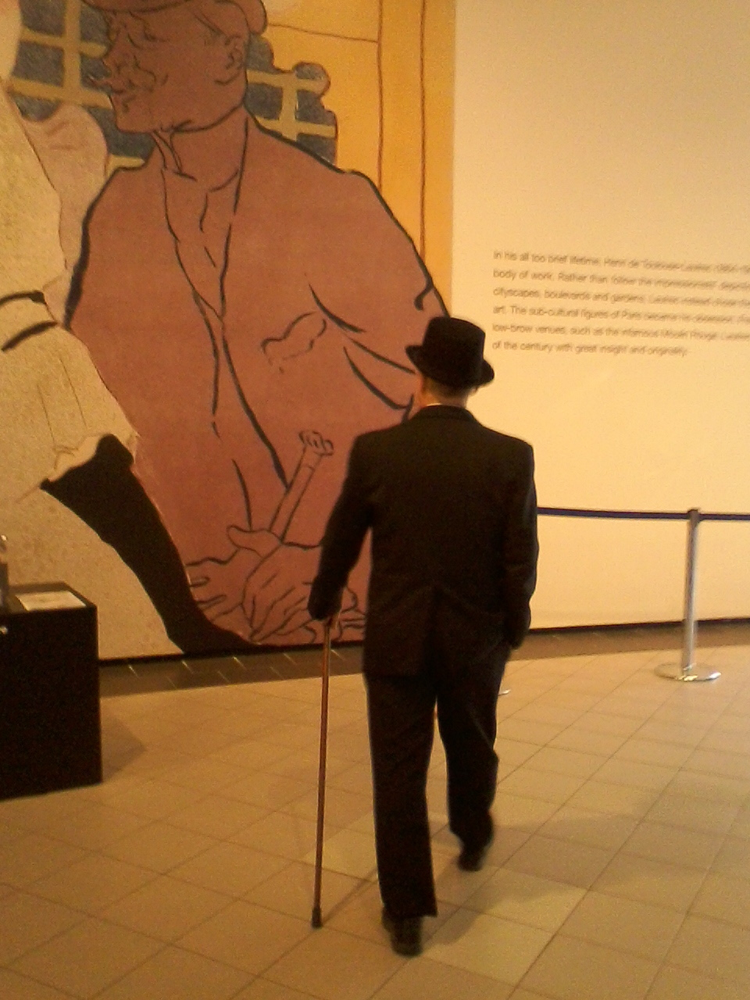
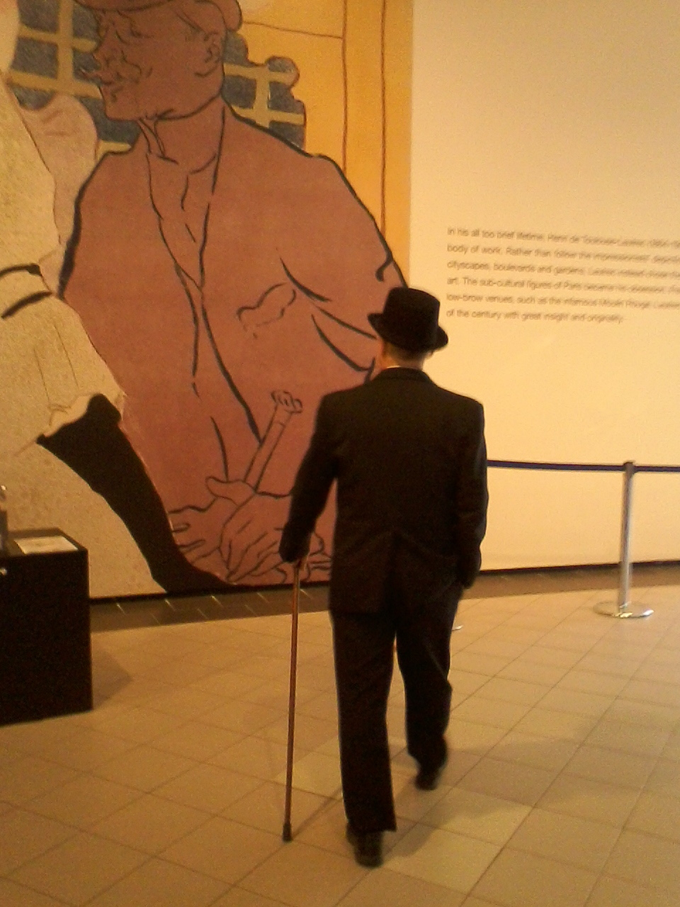

There was of course no way of knowing whether you were being watched at any given moment. How often, or on what system, the Thought Police plugged in on any individual wire was guesswork. It was even conceivable that they watched everybody all the time. But at any rate they could plug in your wire whenever they wanted to.